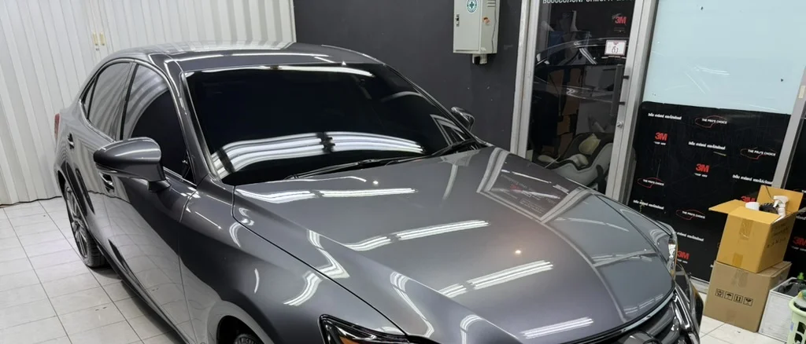
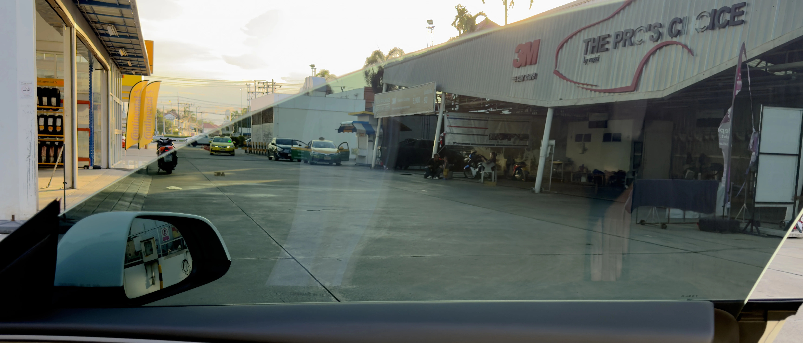

3M™ Crystalline
ฟิล์มระดับสูงสำหรับผู้ที่ต้องการ performance สูง โทนใส คมชัด และภาพรวมที่พรีเมียม
ดูรายละเอียดOVERVIEW
หน้าที่หลักของฟิล์มคือช่วยควบคุมความร้อน แสงสะท้อน และความสบายในการขับขี่ ไม่ใช่เพียงทำให้รถมืดลงเท่านั้น
การเลือกรุ่นที่เหมาะสมควรดูทั้งระดับความสว่างที่ต้องการ การใช้งานจริงในแต่ละวัน และความสมดุลระหว่างความใสกับประสิทธิภาพการลดความร้อน

WHAT FILM DOES
| คุณสมบัติ | ทำได้ | ไม่ได้ |
|---|---|---|
| ช่วยลดความร้อนจากแสงแดด | ✓ | |
| ช่วยลดแสงสะท้อนระหว่างขับขี่ | ✓ | |
| ช่วยกรองรังสี UV | ✓ | |
| ทำให้รถเย็นทันทีหลังจอดตากแดด | ✗ | |
| ทดแทนระบบฉนวนกันความร้อนของตัวรถทั้งหมด | ✗ |
ฟิล์มช่วยจัดการพลังงานแสงที่เข้าสู่ห้องโดยสาร แต่ไม่ได้สร้างความเย็นด้วยตัวเอง
FILM ARCHITECTURE

ฟิล์มระดับสูงสำหรับผู้ที่ต้องการ performance สูง โทนใส คมชัด และภาพรวมที่พรีเมียม
ดูรายละเอียด
สมดุลระหว่างความใส การลดความร้อน และการใช้งานจริงในชีวิตประจำวัน
ดูรายละเอียด
ทางเลือกที่คุ้มค่า สำหรับผู้ที่ต้องการคุณสมบัติหลักในงบประมาณที่เบาลง
ดูรายละเอียดCOMPARISON
| รุ่นฟิล์ม | จุดเด่นหลัก | เหมาะกับใคร |
|---|---|---|
| 3M Crystalline | ฟิล์มระดับสูง โทนใส refined ลดร้อนโดยไม่ต้องเข้มมาก | ผู้ที่ต้องการภาพลักษณ์พรีเมียม ความใส และ performance ระดับบน |
| 3M Ceramic Ultra Clear | สมดุลระหว่างความใส ความสบาย และการใช้งานจริงทุกวัน | ผู้ที่ต้องการฟิล์มเซรามิกที่ตัดสินใจง่าย ใช้งานง่าย และเหมาะกับรถส่วนใหญ่ |
| Defender Nano Ceramic | ตัวเลือกคุ้มค่า เน้นประโยชน์ใช้งานจริงในงบที่เข้าถึงง่ายกว่า | ผู้ที่ต้องการเริ่มต้นจากฟิล์มเซรามิกที่คุ้มค่าและเลือกเฉดได้ง่าย |
ถ้าไม่แน่ใจว่าจะเริ่มจากรุ่นไหน ให้เริ่มจากลักษณะการใช้งานจริงก่อน ไม่ใช่เริ่มจากความเข้มเพียงอย่างเดียว
SELECTION GUIDE
ถ้าคุณให้ความสำคัญกับความใส บุคลิกรถ และความ refined ให้เริ่มดูที่ 3M Crystalline
ถ้าคุณต้องการสมดุลระหว่างความสบาย ความใส และการใช้งานจริง ให้เริ่มดูที่ 3M Ceramic Ultra Clear
ถ้าคุณต้องการผลลัพธ์ใช้งานจริงในงบที่เบากว่า ให้เริ่มดูที่ Defender Nano Ceramic
ให้เริ่มจากการใช้งานจริงก่อน เช่น ขับกลางคืนบ่อยไหม ต้องการความโปร่งหรือความเป็นส่วนตัวมากกว่า แล้วค่อยเลือกระดับความเข้มที่เหมาะกับรถของคุณ
HOW TO CHOOSE
เหมาะกับผู้ที่ต้องการภาพรวมระดับพรีเมียมและให้ความสำคัญกับผลลัพธ์โดยรวมของฟิล์ม
เหมาะกับรถใช้งานประจำวัน ที่ต้องการความสบาย ความคุ้มค่า และความง่ายในการตัดสินใจ
เหมาะกับผู้ที่ต้องการเริ่มจากตัวเลือกที่คุ้มค่า และยังคงเน้นประโยชน์ด้านความสบายในรถ
รุ่นที่เหมาะที่สุดควรพิจารณาร่วมกันจากรุ่นรถ เวลาที่ใช้งานจริง สไตล์การขับ และระดับความเข้มที่คุณยอมรับได้
INSTALLATION STANDARD
ฟิล์มคุณภาพสูงจะให้ผลลัพธ์ที่ดีได้ ต่อเมื่อขั้นตอนการติดตั้งสะอาด ควบคุมสภาพแวดล้อมได้ดี และเตรียมพื้นผิวอย่างละเอียดก่อนเริ่มงาน
เราออกแบบงานติดตั้งให้เน้นความสะอาด ความเรียบร้อย และผลลัพธ์ที่เหมาะกับการใช้งานจริงในระยะยาว เพราะคุณภาพของงานติดตั้งคือส่วนหนึ่งของประสิทธิภาพฟิล์มเช่นกัน

FAQ
ไม่เสมอไป ความเข้มมีผลกับแสงที่มองเห็นได้ แต่ประสิทธิภาพการจัดการความร้อนควรดูร่วมกับเทคโนโลยีของฟิล์มและค่าทางเทคนิคอื่นด้วย
ฟิล์มเซรามิกถูกออกแบบมาเพื่อจัดการพลังงานความร้อนจากแสงแดดได้ดีขึ้น และมักให้สมดุลที่ดีกว่าระหว่างความใส ความสบาย และการใช้งานจริง
โดยทั่วไปควรเลือกฟิล์มที่เป็น metal-free เพื่อให้เหมาะกับรถที่มีระบบอิเล็กทรอนิกส์ เซนเซอร์ และการสื่อสารจำนวนมาก
ควรดูจากลักษณะการใช้งานจริง เช่น ขับกลางคืนบ่อยหรือไม่ ต้องการความโปร่งหรือความเป็นส่วนตัวมากกว่า และต้องการลุครถแบบไหน
สำคัญมาก เพราะผลลัพธ์ของฟิล์มไม่ได้ขึ้นอยู่กับวัสดุอย่างเดียว แต่รวมถึงการเตรียมกระจก ความสะอาด และความเรียบร้อยของงานติดตั้งด้วย
หากต้องการอ่านคำถามเชิงลึกเพิ่มเติมเกี่ยวกับฟิล์มกรองแสง
RELATED SHADES
Ceramic Ultra Clear มี 3 ระดับความเข้มหลักที่ร้านเลือกจำหน่าย โดยแต่ละเฉดถูกออกแบบมาเพื่อการใช้งานที่แตกต่างกัน

เฉดเข้มประมาณ 80% เหมาะกับผู้ที่ต้องการความเป็นส่วนตัวสูง และต้องการลดแสงจ้าได้มากที่สุดในซีรีส์
ดูรายละเอียด IR05
จุดสมดุลของซีรีส์ ให้ความเข้มพอเหมาะ ใช้งานง่ายทั้งกลางวันและกลางคืน
ดูรายละเอียด IR15
โทนโปร่ง มองออกสบาย เหมาะกับผู้ที่ไม่ต้องการฟิล์มเข้มเกินไป และยังได้แนวคิดของฟิล์มเซรามิกที่เน้น comfort
ดูรายละเอียด IR25CONSULTATION
แจ้งรุ่นรถ พื้นที่ใช้งาน และโทนความเข้มที่คุณชอบ เราจะช่วยแนะนำเฉดที่เหมาะกับรถและการใช้งานของคุณก่อนตัดสินใจ
ปรึกษา / นัดหมายติดตั้ง